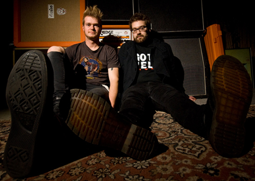

DAZOOK
This Melbourne two-piece outfit consisting of bass and drums was formed by musicians Al Cooke and Cam Mogg, who crossed paths some six years ago on a chance meeting with friends.
Previously together in a band 'Mink Puppet' and playing the Melbourne circuit whilst building a solid fan base for a number of years led 'Mink Puppet' to record their self titled EP in 2007, produced by well known talent Jason Teo at Central Recording Studio in Ashburton.
Al and Cam have also played with acclaimed Swedish based rockstress 'Kitto' as the dynamically tight rhythm section of the band in late 2010 for a tour around Victoria's Peninsula coast. On tour they were joined by Kitto's producer/co-writer/guitarist Pontus Andersson, or 'Pna' to his friends. The tour set a strong bond and long lasting friendship for the four.
From this experience Al and Cam developed new materials within the confines of 'The Factory' with their collective influences giving birth to a new bass driven, psychedelic stoner rock collaboration – namely Dazook.
Whilst writing and recording their demo 'Suzuki Special', Dazook hosted a few shows – including one at Melbourne's iconic Esplanade Hotel before jetting across to Sweden to take up the offer to record their first EP with Pna Andersson at Scarecrow Studios.
Whilst in Stockholm, Dazook supported shows alongside Pna & Kitto and also recorded their second video clip for 'Drift Leaf' on an old abandoned highway in the outskirts of Stockholm.